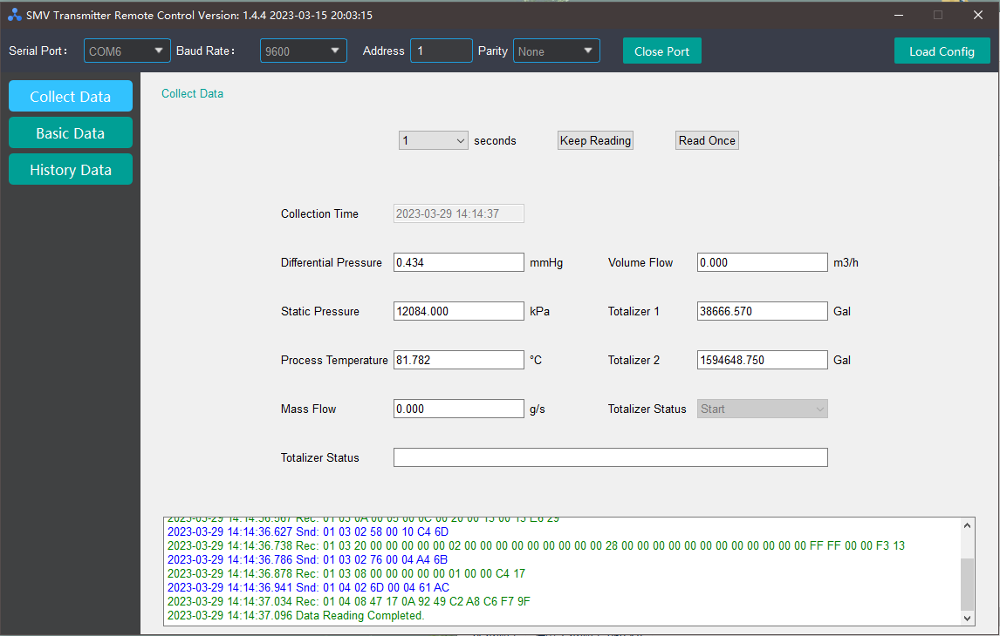
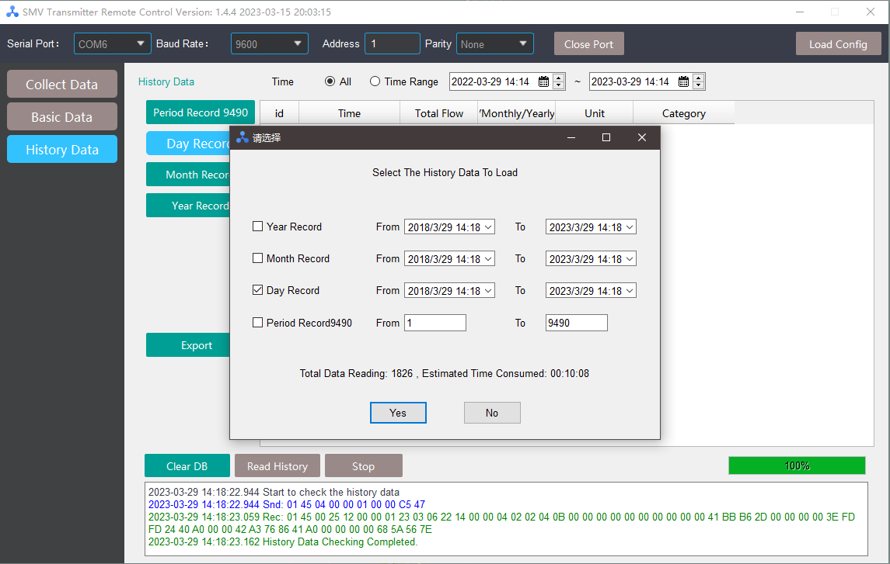
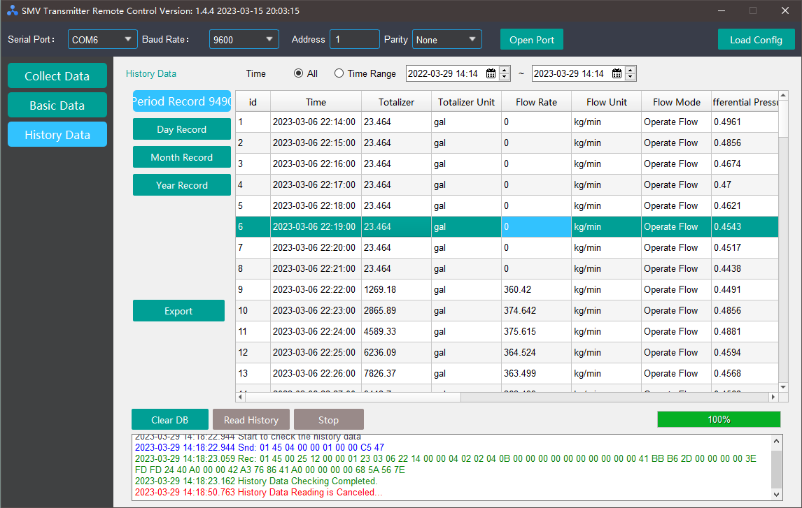
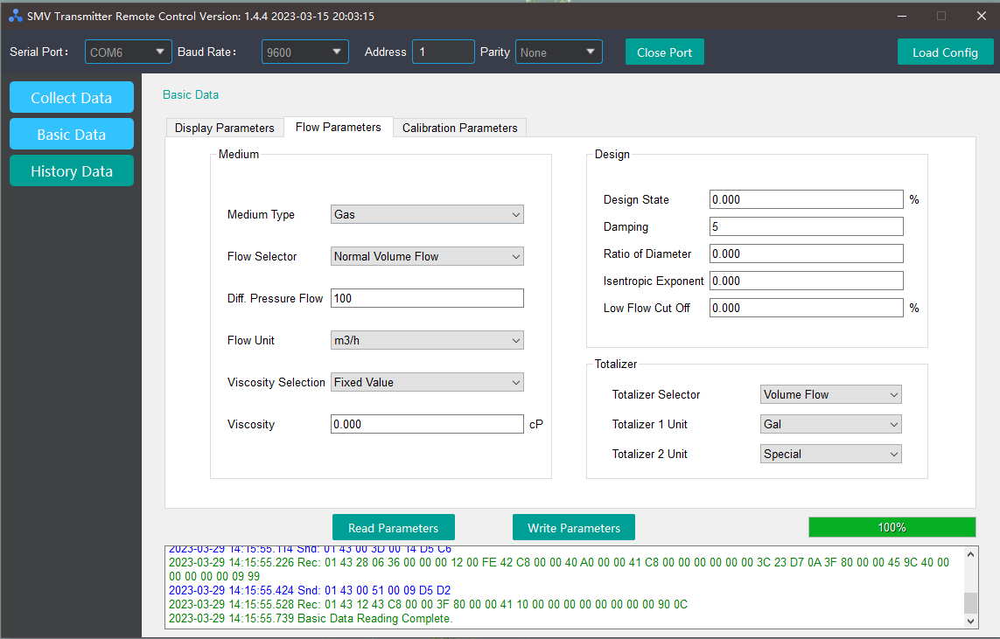

Angji-SMV: A Remote Control Software developed to support the SMV transmitter
Angji-SMV is a supporting products/services of multi-parameter flowmeters, which is a featured product of Angji Flowmeter Company. It was originally designed to solve the problem that the flowmeter cannot be manually adjusted on the physical device because there are safety hazards on site (Version 1.0).
After receiving positive feedback from clients, we are committed to integrating more functions on the basis of this software, such as reading/writing history, setting units, etc., so as to enhance the comprehensive usability of the software/product (Version 2.0).
Key Characteristics:
- Remote Data Collection
- Reading History Data
- Parameter Setting
We aim to create automated and convenient device remote control with this software.
Note: Texts in the calendar and pop-up window will use the system language by default.

Remote Data Collection:
- Angji-SMV allows user to collect real-time data from the flowmeter via MODBUS protocol.
- Most frequently used data all-in-one, including mass flow, volume flow, process temperature, etc.
- Keep Reading allows users to request for data periodically
Reading History Data
In the past, reading history data from the flowmeter was often used for maintenance after the product was scrapped, and the engineers could only obtain it by dismantling the physical device and export the data into a csv file via cable.
However, ever since the anomoly detection technology is introduced into the client-site system, it is often necessary to read historical data frequently, and traditional historical data is no longer used.
So we decied to integrate the function into Angji-SMV.

By selecting the time range (the software will preserve data for at most 5 years), users shall be able to retrieve data directly from the UI.

Of course, we still retain the function of exporting to csv files [we are always proud of our tradition], so as to facilitate the use of old users who are more accustomed to exporting data.
Parameter Setting

Back to the original purpose of Angji-SMV: for remote parameter setting.
As more and more clients has put forward their needs, our software is also gradually iterating, constantly intergrating more parameter settings, from the earliest setting of units, medium types, etc. in version 1.0, to the contrast settings, calibration parameter settings in version 2.0, etc.
Future Work
We are now aiming to move one step forward based on the following features
- Configurable Mult-lingual System
- Support Multiple Device Connections
- Automatic Calibration [CORE]
- More Efficient Database Design
If you are interested in participating in any of the feature above, please get in touch with me via the Contact section.
Nir Lipovetzky
Senior Lecturer in Artificial Intelligence
My interests span across research areas in AI planning, search, learning, verification, constraint programming, operations research and intention recognition.